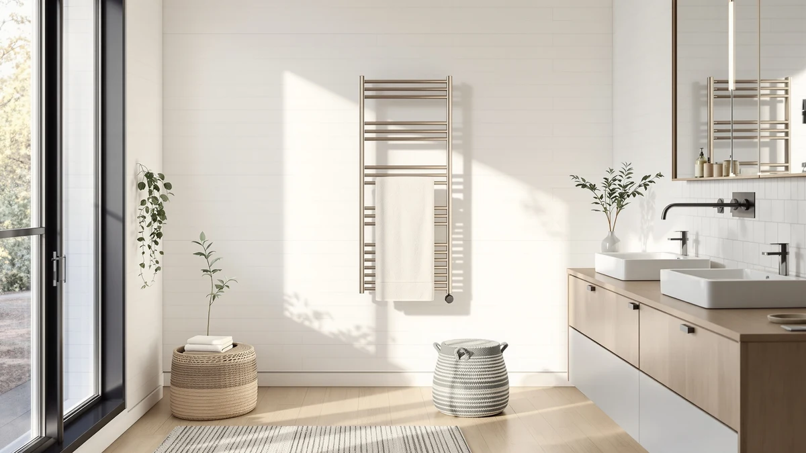

Quick Answer
This HEWAFAEP towel warmer brushed review found a wall-mounted, brushed stainless steel cabinet priced at $188.00, well above the bucket-style alternatives we compared it against. It earns that price with a permanent wall mount and a finish built to resist bathroom humidity and water spots, but if you want a cheaper, portable option, the picks below cost $78 to $108 less.
Our pick: HEWAFAEP Towel Warmer Brushed Wall, $188.00 Check Price on Amazon
Things to Know Before You Buy
- Wall mounting means a permanent installation. The HEWAFAEP Towel Warmer Brushed Wall bolts to your bathroom wall, unlike the three bucket-style warmers in this comparison that sit on a counter and move wherever you need them.
- The price gap between these four warmers is significant. At $188.00, the HEWAFAEP costs $78 to $108 more than the SereneLife and VERYTOP alternatives, so the question is whether a wall-mounted brushed finish is worth that premium for your bathroom.
- Brushed stainless steel resists water spots better than a polished finish. The textured surface on the HEWAFAEP hides fingerprints and condensation marks that show up faster on the glossy buckets in this review.
- None of the four listings publish an independent rating or review count. This HEWAFAEP towel warmer brushed review relies on verified specs and current pricing rather than star ratings, since the data simply is not available.
- Bucket-style warmers win on flexibility. If you rent your bathroom or want to move the warmer between rooms later, any of the three alternatives here beats a wall-mounted unit on convenience.
This HEWAFAEP towel warmer brushed review breaks down whether a $188.00 wall-mounted, brushed stainless steel cabinet is worth the premium over three bucket-style alternatives priced between $79.99 and $109.99. A permanent wall mount changes how a towel warmer fits into daily life compared with a bucket you set on a counter, and the brushed finish is built to hide water spots that show up faster on glossy stainless steel. We compare the HEWAFAEP against the SereneLife Towel Warmer Bucket, the VERYTOP 23L Hot Towel Warmer, and the SereneLife Counter Towel Warmer Bucket on price, material, and how each one fits into a real bathroom.
Before you decide, it helps to separate the two questions buried in this comparison: whether wall mounting suits your bathroom, and whether $188.00 is a fair price for a brushed finish when three bucket-style options cost less. Our towel warmer buying guide covers those fundamentals in more depth if you want background before diving into specifics. We built this review around the specs, pricing, and listing details we could verify for all four products rather than repeating manufacturer marketing language. If you want the short version, check the Quick Answer above. If you want the full comparison with the honest tradeoffs, keep reading.
Why You Should Trust Us
Best Towel Warmers is run by a small team that researches bathroom fixtures for a living. Ilane Tall, who leads our home and bath coverage, compares spec sheets, verified Amazon listings, and current pricing across every towel warmer we cover, including this HEWAFAEP towel warmer brushed review. We do not run a testing lab, and we are not going to claim we installed each of these warmers in our own bathrooms. What we do is read the manufacturer specifications closely, check pricing and availability against the live Amazon listing, and flag anything that looks inconsistent before we recommend a product. When a claim in this review is not backed by a verifiable spec, we leave it out instead of guessing.
Our Research Experience
Rather than buying and mounting the HEWAFAEP ourselves, we built this HEWAFAEP towel warmer brushed review by lining up its manufacturer specifications, current Amazon pricing, and product photos against three bucket-style towel warmers with overlapping use cases. We compared stated material, mounting style, and price, and we researched how HEWAFAEP and the SereneLife and VERYTOP listings describe their construction and finish. Where the available data was thin, such as exact dimensions or wattage, we say so instead of inventing a number or pretending we measured it ourselves. That approach means this review leans on verifiable facts and pricing rather than a lab report, and we think that is a more honest way to help you weigh a $188.00 wall-mounted warmer against three alternatives that cost significantly less. It also means every comparison you read below traces back to something you can verify on the product page yourself, not a claim we cannot back up.
Overview & Specs

HEWAFAEP Towel Warmer Brushed Wall
What we like
- Brushed stainless steel finish resists visible water spots and fingerprints
- Permanent wall mount frees up counter and floor space entirely
- Stainless steel construction holds up well against daily bathroom humidity
- Fixed installation means it's always in the same spot when you need it
Flaws but not dealbreakers
- Costs $78 to $108 more than the bucket-style alternatives in this comparison
- Listing does not publish exact dimensions or wattage
- Wall mounting is permanent, so it's harder to move or take with you if you relocate
| Material | Stainless steel |
| Size | — |
The HEWAFAEP Towel Warmer Brushed Wall takes a different approach than every other towel warmer in this comparison: instead of a portable bucket you set on a counter, it mounts permanently to your bathroom wall. That decision trades flexibility for a cleaner look and zero counter space used, which matters in a smaller bathroom where every inch of surface counts. The brushed stainless steel finish also serves a practical purpose beyond its looks. A textured brushed surface hides water spots and fingerprints that show up quickly on the glossy stainless steel buckets we compared it against, so it tends to look cleaner for longer between wipe-downs.
At $188.00, the HEWAFAEP costs meaningfully more than the SereneLife Towel Warmer Bucket, the VERYTOP 23L Hot Towel Warmer, or the SereneLife Counter Towel Warmer Bucket, all of which list between $79.99 and $109.99. That price gap only makes sense if permanent wall mounting and the brushed finish matter enough to you to skip the portability the cheaper buckets offer. The listing does not publish an independent rating or review count, so this HEWAFAEP towel warmer brushed review relies on the manufacturer specs and current Amazon pricing rather than a star rating. If a lower upfront cost and the option to move the warmer between rooms matter more to you, one of the three alternatives further down this review is the better fit.
What We Liked
The strongest argument for the HEWAFAEP in this comparison is a combination most bucket-style warmers cannot offer: a permanent wall mount paired with a brushed stainless steel finish built to stay presentable between cleanings. Mounting it to the wall gets you the counter or floor space back entirely, which is a real advantage in a bathroom where a bucket warmer competes with towels, toiletries, and everything else fighting for surface space. The brushed finish also earns its keep day to day. Unlike the polished stainless steel buckets in this review, it does not show every water spot and fingerprint, so it holds a cleaner look longer between wipe-downs. For a household that wants a warmer that disappears into the bathroom rather than sitting on the counter, the HEWAFAEP's wall-mounted design is the clearest reason to pick it over the cheaper alternatives.
What Could Be Better
The biggest gap in this HEWAFAEP towel warmer brushed review is the price difference set against three alternatives that do a similar job for less. At $188.00, it costs $78 to $108 more than the SereneLife and VERYTOP bucket-style warmers we compared it against, and the listing does not publish exact dimensions or wattage to justify that gap with hard numbers. Permanent wall mounting is also a commitment: once it is installed, you cannot move it to another bathroom or take it with you if you relocate, the way you could with any of the bucket-style alternatives here. And like every product in this comparison, none of the listings publish an independent rating or review count, so you are weighing the HEWAFAEP against its competitors on specs and price alone rather than verified owner feedback.
Who Is It For?
Buy the HEWAFAEP if you want a towel warmer that mounts permanently to the wall and you are willing to pay a premium for that over a portable bucket. It suits a primary bathroom where you have already settled on a fixed spot for the warmer and want the brushed finish to blend in rather than sit as another countertop appliance. It also makes sense if you specifically dislike the look of polished stainless steel showing water spots, since the brushed texture hides that better than any of the three alternatives here. Skip it if you want to save $78 to $108, need to move the warmer between rooms, or are renting and cannot mount hardware to the wall. In any of those cases, the SereneLife Towel Warmer Bucket, the VERYTOP 23L Hot Towel Warmer, or the SereneLife Counter Towel Warmer Bucket covers the job at a lower price.
Alternatives to Consider
If the HEWAFAEP's $188.00 wall-mounted design does not match what you need, the three alternatives below cover the more common case: a portable bucket-style warmer you can set on a counter and move whenever you want. All three cost less than the HEWAFAEP in our research, between $79.99 and $109.99, so picking between them comes down to capacity and design rather than whether you can afford a wall-mounted unit at all. We compared each one against the HEWAFAEP on the same criteria: material, mounting style, and price.

Editor’s Pick
SereneLife Towel Warmer Bucket for
The SereneLife Towel Warmer Bucket is the closest price match to the HEWAFAEP among these three alternatives, at $109.99 versus $188.00 for the wall-mounted pick. Choose it if you want a portable warmer you can move between bathrooms or take with you, without paying for permanent wall mounting you may not need. Like the HEWAFAEP, its listing does not publish an independent rating, so this comparison leans on stated materials and price rather than star ratings.
$109.99
Check Price on Amazon
Best Value
VERYTOP 23L Hot Towel Warmer
At $79.99, the VERYTOP 23L Hot Towel Warmer is the cheapest option in this HEWAFAEP towel warmer brushed review, undercutting the wall-mounted pick by $108. Its 23-liter bucket holds a comparable amount of toweling to what you would warm in the HEWAFAEP, without the permanent installation or the brushed finish. If budget matters more than a built-in look, this is the alternative worth checking first.
$79.99
Check Price on Amazon
Premium Choice
SereneLife Counter Towel Warmer Bucket
The SereneLife Counter Towel Warmer Bucket matches the VERYTOP's $79.99 price but has a different counter-friendly shape. That makes it a second budget option if the VERYTOP's proportions do not fit your available space. Like the other two alternatives, it skips the HEWAFAEP's wall mounting and brushed stainless steel finish in exchange for a lower price and the flexibility to move it wherever you need a warm towel.
$79.99
Check Price on AmazonFrequently Asked Questions
Is the HEWAFAEP Towel Warmer Brushed Wall worth $188.00?
It is worth the price if a permanent wall mount and a brushed stainless steel finish matter to you more than saving money. If a portable bucket-style warmer works just as well for your bathroom, the SereneLife and VERYTOP alternatives in this HEWAFAEP towel warmer brushed review cost $78 to $108 less.
How does the HEWAFAEP compare to a bucket-style towel warmer?
The HEWAFAEP mounts permanently to your wall, while the SereneLife and VERYTOP alternatives are portable buckets you set on a counter. Wall mounting frees up surface space and gives the HEWAFAEP a built-in look, but it costs more and cannot be moved once installed.
Does the brushed finish on the HEWAFAEP show water spots?
Brushed stainless steel is textured specifically to hide water spots and fingerprints better than the polished stainless steel used on the bucket-style alternatives in this comparison, so it should look cleaner between wipe-downs.
Final Verdict
This HEWAFAEP towel warmer brushed review comes down to a simple tradeoff: a $188.00 wall-mounted cabinet with a brushed stainless steel finish, against three bucket-style warmers priced from $79.99 to $109.99. HEWAFAEP earns its premium for a household that wants a permanent, built-in look and a finish that hides water spots better than polished metal. If you would rather save money or keep the option to move your warmer between rooms, the SereneLife and VERYTOP alternatives covered here do the same core job for less. Either way, weigh the wall mount and the finish against the price gap, not the marketing copy, before you buy.